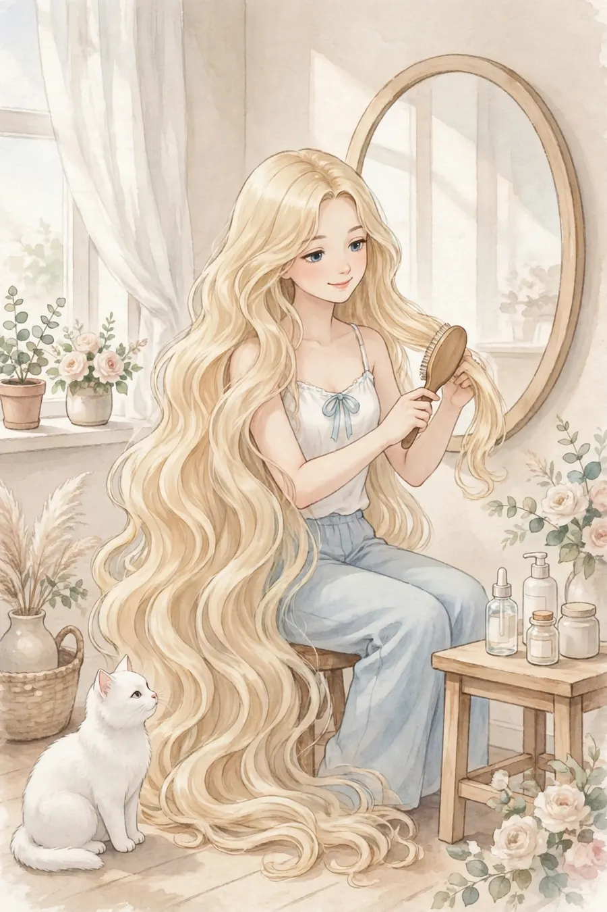

トップ ＞ ヘアケア ＞ カラーの色持ちをうたうタイプの表示の読み方
カラーの色持ちをうたうタイプの表示の読み方

サロンでカラーをしたあと、美容師さんから「色持ちを考えたケアを」と言われたことはありませんか。店頭には「カラーの色持ちをうたうタイプ」のシャンプーやトリートメントが並んでいます。この記事では、特定の商品の話ではなく、そうした表示の読み方を整理します。私自身、カラーの色持ちをうたう表示を見るときは、まず「何をもって色持ちとしているのか」を確かめるようにしています。
「色持ち」をうたう表示の見方
「カラーケア用」「カラー専用」「カラー後のケア」といった表示は、その商品がカラーをした髪を想定して作られていることを示しています。表示の文言は商品によってさまざまで、「色落ちを抑える洗い方」「カラー後の髪の手触りを整える」といった書き方もあります。文言の違いは、その商品の設計の違いでもあります。
シャンプーとトリートメントが同じシリーズでそろっていることもあります。表示を読むときは、シャンプー単体ではなく、トリートメントの表示もあわせて読むと、想定されている使い方が見えてきます。「セットで使う」ことが前提の表示になっている商品もあるので、片方だけの表示で判断しないようにしています。
洗い方で変わる、表示の前提
カラーの色持ちは、使うアイテムだけでなく、洗い方も関係します。パッケージの「使用方法」の欄には、お湯の温度の目安や、洗う回数、すすぎの仕方が書かれていることがあります。たとえば「ぬるま湯で洗う」「泡立ててから使う」といった案内は、表示の前提になっている使い方です。
洗う回数が多い日は、シャンプーの使用量や洗い方を見直すきっかけにもなります。私は、カラーをした直後の数日は、表示の使用量を守りながら、すすぎを丁寧にするようにしています。すすぎ残しがあると、髪の手触りが重く感じることがあるからです。表示の手順は、その商品の使い方の基本形です。
サロンカラーの間隔とホームケア
次のサロンカラーまでの間は、ホームケアの期間です。表示には「使用量の目安」や「使用頻度」の案内が書かれていることがあります。毎日使うタイプもあれば、週に数回の使用が想定されているタイプもあります。頻度の表示は、その商品の使い方の前提なので、自分の洗髪の回数と照らし合わせて読むと、使い方が決めやすくなります。
トリートメントの表示にも、色持ちに関わる案内があります。「置く時間の目安」や「流し方」の欄に、数分の置き時間が書かれていることがあります。置く時間は、その商品の使い方の前提なので、表示の時間より長く置けばいいというものではありません。私は、表示の時間を守りながら、すすぎを丁寧にするようにしています。流し残しがあると、髪の手触りが重く感じることがあるからです。
日差しの強い日の外出や、帽子をかぶる日も、表示を読む場面です。「日差し対策」「外出時のケア」といった案内が書かれている商品もあります。カラーをした髪は、日差しや摩擦の影響を受けやすいと言われることもあるので、外出の日のケアも表示の案内から考えるようにしています。気になることがあれば、カラーを担当した美容師さんに相談するのが確実です。
カラーの色の見え方は、髪の状態やカラーの種類によっても違います。気になることがあれば、カラーを担当した美容師さんに相談するのが確実です。この記事は表示の読み方の案内であり、商品ごとに表示がある場合は、そちらが優先です。表示を読み、使い方を守ることが、ホームケアの出発点になります。表示の読み方は、ほかのヘアケアの表示を読むときにも役立ちます。

セラフィナ「色持ちの表示は、洗い方の前提とセットで読むものだね。まずは使い方の欄から」

セラフィナ｜美容の道具箱の案内役
「量と表示が分かれば、美容は失敗しない。」——セラフィナと白猫のモコが、買う前のチェックポイントを案内します。綺麗になりたい気持ちに正直に、でも表示は冷静に読むのが、このサイトの約束です。